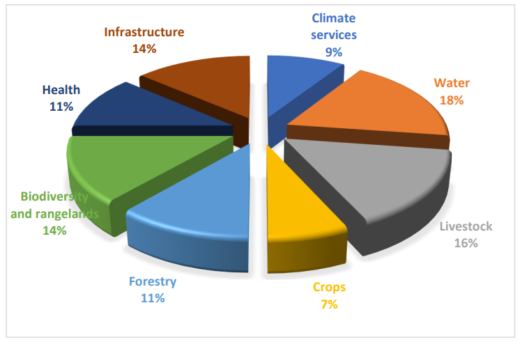
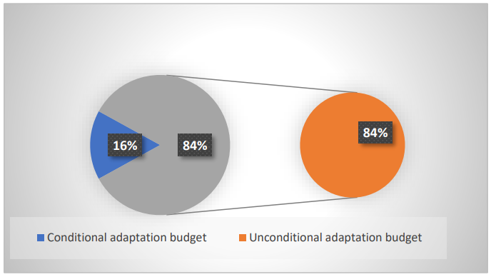
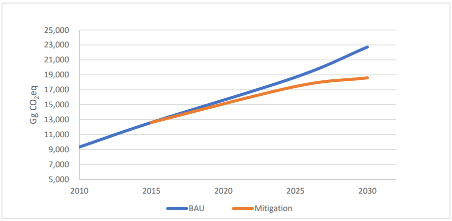
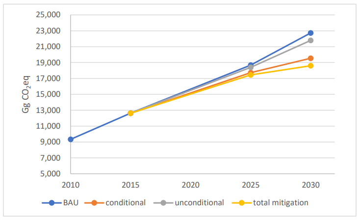
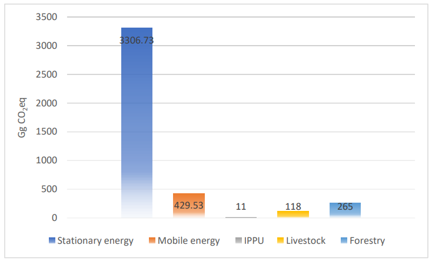
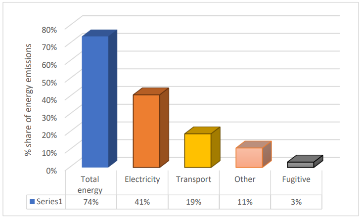
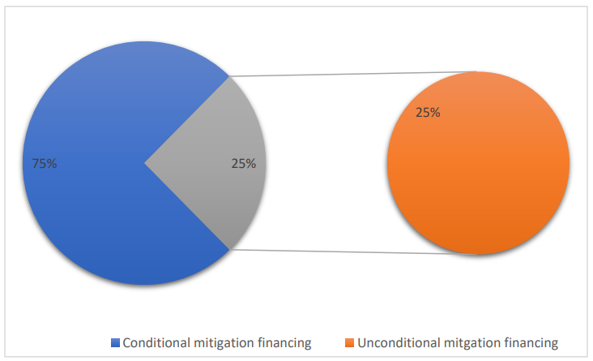
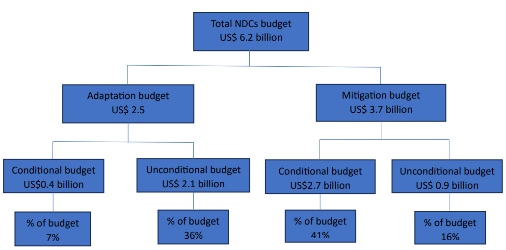

Botswana Department of Meteorological Services, greatly appreciate the United Nations Development Program (UNDP) Resident Representative in Botswana for the provision of the technical and financial support in updating this Nationally Determined Contributions (NDCs) report. Our gratitude goes to the key stakeholders that comprise of Government Ministries and Departments, Parastatals, Academia, Non-Governmental Organizations, Private entities, and Civil Society Organizations for their highly informative and participation in the process. We thank the Consultancy Teams; HEAT GmbH, Dr. Sennye Masike and Dr. Kakanyo Fani Dintwa for undertaking and completing the task. The project management team is acknowledged for its guidance throughout the process.
Department of Meteorological Services
P.O. Box 10100 Gaborone Botswana Phone: +267 3612200
Facebook: Botswana Meteorological Services.
AdCom Adaptation communication
AFOLU Agriculture, forest and other land uses
CO2eq Carbon dioxide equivalent
DEA Department of Environmental Affairs
DFRR Department of Forestry and Range Resources
DMS Department of Meteorological Services
ETF Enhanced transparency framework
GACMO Greenhouse Gas Abatement Cost Model
GHGs Greenhouse gases
GoB Government of Botswana
Gg Gigagram
GDP Gross domestic product
HFCs Hydrofluorocarbons
ICAT Initiative for Climate Action Transparency
ICT Information and communication technology
INDCs Intended Nationally Determined Contributions
IPPU Industrial Processes and Product Use
IWRM Integrated water resources management
KPIs Key performance indicators
LED Light emitting diode
MW Megawatt
M&E Monitoring and evaluation
NDP National Development Plan
NAP National Adaptation Plan
NCCSB National Climate Change Strategy for Botswana
NCCAPB National Climate Change Action Plan for Botswana
NDCs Nationally Determined Contributions
NCCC National Climate Change Committee<
NGOs non-governmental organisations
NMES National Monitoring and Evaluation Systems
PV Photovoltaic
TBD To be determined
UNDP United Nations Development Programme
UNFCCC United Nations Framework Convention on Climate Change
WTS Water transfer schemes
This document presents the Government of Botswana's (GoB) updated Nationally Determined Contributions (NDCs) in accordance with the Paris Agreement Article 4.9, which urges parties to update and communicate their NDCs every five years. Under decision 4/CMA. 1 para 7 of the Paris Agreement, parties are required to have updated their NDCs by 2020. Botswana communicated its Intended Nationally Determined Contributions (INDCs) as per decision 1/CP. 19 and 1/CP.20 in 2015, which were adopted in 2016 as the country's first NDCs.
The updated processes involved a multi-methodological approach. Stakeholder consultation was the chief approach utilised in the updating process. All relevant stakeholders were consulted to identify and validate the mitigation measures that were outlined in the first NDCs. The second approach involved the application of the Greenhouse Gas Abatement Cost Model (GACMO) to estimate the country's GHG emissions trajectory pathways under both business-as-usual and mitigation measures. Importantly, to facilitate the implementation of the NDCs, the NDCs measures and targets were aligned with national priorities and targets. Consequently, national planning documents such as Vision 2036, the National Development Plan 11 (NDP 11), the National Energy Policy, and the National Integrated Transport Policy were critically reviewed. Simulation of the GHG emissions for the updated NDCs involved using the 2015 National GHG emissions inventory as the baseline, and projections were made to 2030 based on past GHG emissions growth rates. The updated NDCs GHG emissions by 2030 are similar to those reported in the first NDCs.
In line with the country's first NDCs, the updated NDCs highlights both the adaptation and the mitigation measures that the country endeavours to undertake based on the financing conditionality. Both the mitigation and adaptation measures cover all sectors.
As a low GHG-emitting country (contributing 0.019% of global emissions) that is highly vulnerable to climate change, Botswana prioritises the NDCs adaptation section. Therefore, domestic funds will be prioritised for adaptation over mitigation measures. Importantly, gender issues to prioritise and lower the vulnerability of marginalised communities were also considered.
Botswana became a Party to The United Nations Framework Convention on Climate Change (UNFCCC) on June 12, 1992, and ratified the convention on January 27, 1994, as a non-Annex I member.
The country is in Southern Africa, bordering South Africa on the southern part, Namibia on the south-western, and Zambia and Zimbabwe on the north and north- north-eastern parts, respectively. The country covers approximately 598,000 km2. The climate of Botswana is described as semi-arid to arid, with acute water scarcity and fragile ecosystems that are prone to degradation. Annual rainfall ranges from 600 mm in the northern part of the country to 250 mm in the south-western part of the country.
On the other hand, annual evapotranspiration in the country is estimated at 2,000 mm. These climatic conditions are ideal for amplifying the impacts of climate change on key economic sectors and community livelihoods. In fact, based on the harsh semi-arid environment, acute water scarcity and fragile ecosystems, Botswana is already at a tipping point, where climate change could be the defining parameter to tip the scale to irreversible disastrous points for the country and its people (Urich et al., 2021).
Botswana's population was estimated at 2.346 million based on the population and housing census of 2022 (Statistics Botswana, 2022). Based on the 2011 population census, estimated at 2.024 million, the country's population growth rate is estimated to be 1.25% annually.
Botswana is classified as an upper middle-income country with a GDP of US$18,730.21 million for 2022 (Statistics Botswana, 2021). The country averages an annual economic growth rate of approximately 3%. Income equality in the country, as measured by the GINI coefficient, is estimated at approximately 0.55, which is classified as highly unequal. The employment rate measured for those aged 18 and above is around 26% (Statistics Botswana, 2022).
Vision 2036 and the National Development Plan 11 (NDP 11) outline the country's priorities. The NDP 11 has six broad national priorities which cover all economic sectors (GoB, 2016). These national priorities include:
Developing diversified sources of economic growth;
Human capital development;
Social development;
Sustainable use of natural resources;
Consolidation of good governance and strengthening of national security; and
Implementation of an effective monitoring and evaluation (M&E) system.
Climate change adaptation and mitigation are prioritised under the sustainable use of natural resources. The government endeavours to mainstream environment and climate change into the development process to build a climate-resilient economy and, at the same time, contribute to global efforts to reduce GHG emissions. This will be achieved by the implementation of strategic programmatic and proactive adaptation and mitigation measures at national and sectoral levels.
Botswana's climate is described as semi-arid to arid. This harsh climate has resulted in acute water scarcity and highly fragile ecosystems, which over the years have been degraded due to over-stocking, overgrazing, and environmental pollution. Consequently, these conditions create a conducive environment to worsen climate change impacts across all economic and biodiversity sectors.
In fact, climate change is at an advanced stage in the country, compounded by the harsh semi-arid environment, acute water scarcity, and fragile ecosystems. Recently, the country has been experiencing persistent heat waves with temperatures exceeding the 40oC mark on a yearly basis. Furthermore, the country has been experiencing severe droughts, as well as flooding events from tropical cyclone hurricanes originating in the Indian Ocean from Mozambique, such as the Dineo and Freddy cyclones of 2017 and 2023, respectively. On the other extreme from heatwaves, the country's winter months have seen intensified cold fronts. Lastly, the country also experiences hailstorms with devastating impacts on the crops, livestock, and infrastructure sectors.
Various studies such as climate change vulnerability assessments, and climate change and tipping points evaluations for Botswana consistently paint a gloomy and dire picture for Botswana (GoB, 2019; Urich et al., 2021).
Climate change as a cross-cutting phenomenon is impacting the country's economic and biodiversity sectors. The drought episodes are affecting the crop and livestock sectors. The livestock sector experiences increased livestock mortality from lack of feed and water. Similarly, crop productivity declines significantly due to lack of rainfall as it is mainly rainfed/dryland farming. The climate change impacts on the crop and livestock sectors cascade to both the national economy and household level, where there is a decline in gross domestic product (GDP), an increase in government expenditure on drought relief programmes, reduced household incomes, and a lack of food for rural households who are dependent on agriculture for food production. Similarly, drought episodes affect biodiversity through increased mortality of wildlife populations and environmental degradation, which in turn affect the tourism sector and contribute to increased incidents of human-wildlife conflicts.
Furthermore, floods impact nearly all of the infrastructure sector in the country. The floods affect roads, railways, buildings, and ICT, which costs the country billions of dollars in repair costs. Additionally, human lives are lost and negatively affected by severe flooding events.
Consequently, all events associated with climate change (heatwaves, drought, floods, hailstorms, cold fronts, etc.`) have significant economic and health impacts on the national economy and community livelihoods.
The government of Botswana has recognised the imminent and potentially disastrous impacts posed by climate change on economic development and livelihoods. The country has thus prioritised climate change adaptation and mitigation to achieve high-income level status by 2036. To create an enabling environment to climate-proof the economy and its citizenry, the government has established legal and policy frameworks to guide the planning and implementation process of climate change.
At the top of the list is the Botswana Climate Change Response Policy of 2021. This overarching legal framework aims to guide the country's decision-making and planning processes to achieve climate resilience, increase its adaptative capacity, and coordinate efforts to meet the UNFCCC requirements. The policy aims to mainstream climate change into development planning, promote low-carbon development pathways, and ultimately reduce the country's GHG emissions. The policy emphasises the participation of the government, general population, and business community to identify mitigation projects/efforts and prepare mitigation plans for GHG emissions reductions and co-benefits to the national economy.
The country developed its National Adaptation Plan (NAP) framework in 2019 as a strategic platform to coordinate and harmonise the implementation of the sectoral adaptation plans. The NAP Framework was developed with the realisation that over the years, the country has been implementing sectoral climate change adaptation measures in an uncoordinated manner; hence, the need for a coordinated approach was identified. Subsequently, the NAP Framework is meant to guide the NAP process, ensuring it takes a holistic approach and that it mainstreams and integrates climate change adaptation into all levels of planning and implementation at national and subnational levels (GoB, 2020).
Furthermore, the country developed the National Climate Change Strategy for Botswana (NCCSB) of 2018, which aims to create an enabling environment for the implementation of the country's adaptation and mitigation plans to propel the country to meet its socio-economic development goals, achieving Vision 2036 targets and the SDGs. The NCCSB identified 11 priority adaptation areas for the years 2018 to 2030. The NCCSB has identified a set of implementable high-level adaptation strategies and actions for 11 sectors' activities (Agriculture and Food Security; Water; Human Health; Human Settlements; Forest, Savanna and Woodland Management; Land Use and Land Use Change; Disaster Risk Management; Biodiversity and Ecosystems; Infrastructure Development; Industry and Manufacturing; and Tourism).
Following the National Climate Change Strategy for Botswana, the government developed the National Climate Change Action Plan for Botswana (NCCAPB) to implement the national climate change strategy. Consequently, it lists all key performance indicators (KPIs) and targets for monitoring the adaptation measures as identified in the NCCSB.
In addition to the policy and legal framework, the government established institutions for coordinating climate change response activities. The Department of Meteorological Services (DMS) is the lead agency for coordinating the country's climate change responses (adaptation and mitigation) and the focal point of the UNFCCC. Furthermore, it generates hydrometeorological data and information for early warning systems and development of the country's climate scenarios.
The country established the National Climate Change Committee (NCCC), which comprises government ministries/departments, non-governmental organisations (NGOs), and the private sector. It was established as an advisory body to coordinate the implementation of climate change activities. The Deputy Permanent Secretary (DPS) in the Ministry of Environment and Tourism is the chairperson of the Committee. Some of the responsibilities of the NCCC include overseeing the preparation of the National Communication to the Climate Change
Secretariat and ensuring the formulation of appropriate national responses to climate change issues.
There are numerous other policies that directly seek to address the mitigation processes of the country. These include the National Energy Policy, the Integrated Transport Policy, and climate-smart agriculture initiatives, amongst others.
Updating the country NDCs followed a highly informative and participatory process that involved consultation with the relevant stakeholders, mainly line-ministries departments, parastatals, the private sector, and non-governmental organisations. These stakeholders were consulted on a one-on-one basis and through validation workshops. Furthermore, a thorough desk review was undertaken to ensure consistency with the country's national priorities and targets.
Incidentally, the entry point for updating the NDCs was a review of the first NDCs. The identified mitigation and adaptation measures in the first NDCs were analysed in terms of targets, budgets, and their GHG emissions reduction potential. Furthermore, a review of all the relevant documents, such as the National Climate Change Strategy for Botswana (NCCSB), the National Climate Change Action Plan for Botswana (NCCAPB), the second and third National Communications, and sectoral plans, was undertaken to identify the adaptation measures. The National Energy Policy, National Integrated Transport Sector Policy, vision 2036, and National Development Plan 11 were reviewed to identify the mitigation measures and national targets. The first NDCs lacked targets, particularly on adaptation. These indicators were obtained through document review and consultation with stakeholders for the updated NDCs.
Concerning mitigation, the following steps were undertaken to estimate the GHG emissions reduction potential and targets:
Simulation of GHG emissions under the business-as-usual from 2015 to 2030 based on the economic growth rate and population;
Identification of mitigation measures and their implementation pathways, taking 2025 as the mid-year and 2030 as the final year;
Simulation of GHG emissions under the mitigation implementation pathways; and
Identification of the conditional and unconditional budgets for the adaptation and mitigation measures.
Another important aspect that was included in the updated NDCs was the issue of conditionality. Conditionality involves determining the adaptation and mitigation measures that government has the capacity to fund locally, and those that require international funding assistance.
Botswana's economy and infrastructure are highly vulnerable to climate change impacts, as reported in the country's first adaptation communication (AdCom). Factors that amplify the country's vulnerability include the dependency of the economy on rainfall, the semi-arid climate, and the highly fragile ecosystems.
As reported in the country's first AdCom, the crop and livestock sectors are mainly rainfall dependent. For instance, 90% of the crop production in the country is rainfed. With a projected precipitation decline of 15% by 2050, it is expected that crop yield will also decline. Furthermore, with the projected increased frequency and intensity of droughts, crop failure is expected to decline significantly in future, particularly during drought years.
Livestock in the country is also rainfall dependent. It is estimated that only 20% of livestock farmers utilising communal holdings practise supplementary feeding. Further worsening this picture is that the livestock feed used to supplement grazing is rainfed, which has implications for a cascade of failed production during drought years.
Water is another critical sector already under stress in the country. The average annual for the country is estimated at 550 mm, while evaporation is about 2000 mm. With the projected decline in rainfall and increase in evapotranspiration, the outcome is an increase in water scarcity in the future. Similarly, biodiversity, health, and infrastructure have been identified to be equally vulnerable.
Over the years, the country has designed and operationalised sectoral adaptation measures to respond to climate-related events. The adaptation measures cover all economic sectors, key ones being agriculture (crops and livestock), biodiversity and rangeland, health, infrastructure, and water and sanitation.
Consequently, Botswana is highly vulnerable to climate change, while it is one of the lowest GHG emitters. Its contribution to global GHG emissions is approximately 0.019%. Therefore, the country has taken the stance to prioritise climate change adaptation with co-benefits of mitigating GHG emissions over pure mitigation measures. Thus, Botswana's limited domestic funds will be prioritised for the NDCs adaptation measures. Importantly, all the adaptation measures across the economic sectors are given equal priority.
As informed by the National Communications, the National Climate Change Strategy for Botswana (NCCSB), the National Climate Change Action Plan for Botswana (NCCAPB), and the sectoral strategies and plans, the NDCs constitute 44 adaptation measures covering all key economic sectors. This represents a substantial increase from the first NDCs adaptation measures. The additional adaptation measures are from the infrastructure sector, which was previously omitted in the first NDCs and the National Communications. Annex 1 depicts the prioritised adaptation measures by sector, their indicators, and targets. Figure 1 below shows the distribution of the adaptation measures across some key economic sectors.

Figure 1: Distribution of the prioritised adaptation measure across sectors
Most of these adaptation measures are already underway, as reported in the country's AdCom. They include promoting climate-smart agriculture, conservation agriculture, and introducing the drought-tolerant livestock breed Mosi. In the water sector, Botswana has made significant headway in implementing water transfer schemes (WTS), developing wellfields and connections to the WTS for conjunctive surface-groundwater use, and promoting integrated water resources management (IWRM). Similarly, the biodiversity and rangeland sector has not lagged. Some of the adaptation measures on biodiversity include improving protected areas management, identifying and opening wildlife migratory corridors to enhance their migration patterns between protected areas, and providing water in those protected areas. The Department of Forestry and Range Resources (DFRR), whose portfolio includes forestry and rangeland management, is implementing various adaptation measures to control and limit the spread of wildfires. These include the construction and maintenance of fire breaks, training and enhancing community involvement in fire prevention, and control and fire management through early warning systems based on remote sensing techniques. Emphasis is also placed on an ecosystem-based approach (EbA) to enhance the flow of ecosystem services to buffer the impacts of climate change on community livelihoods.

Conditional adaptation budget Unconditional adaptation budget
The total budget for the NDCs adaptation across the eight sectors detailed in Figure 1 is estimated at approximately US$ 2.5 billion. It is important to note that this budget will be updated based on the detailed sectoral adaptation plans; the infrastructure sector, in particular, was excluded from initial budget estimations due to technicalities. The conditionality of the adaptation budget is depicted in Figure 2 below.
Figure 2: Budget conditionality of the NDCs adaptation measures
The conditionality of the NDCs adaptation is in line with the government's stance that the limited domestic resources available will be prioritised for adaptation to protect livelihoods.
The first NDCs estimated the country's national GHG emissions, taking 2010 as the baseline year. It projected the country's total GHG emissions to have risen to
22,098 Gg CO2eq by 2030. The first NDCs projected the national GHG emissions based on the planned expansion of the country's thermal power stations and using the annual population growth of 1.8% and a projected annual GDP growth of 3%.
The updated NDCs projected the national GHG emissions from 2015 to 2030, taking 2015 as the baseline year. The national GHG emissions under the updated NDCs is estimated at approximately 22,732 Gg CO2eq, which is consistent with the first NDCs. The current development of the construction and operation of a 600 MW coal-fired power station has been included in the GHG emissions projections. The projections were based on a fully operational coal-powered station of 1200 MW capacity by 2030, which would result in approximately 10,176 Gg of CO2eq from electricity generation. The other sectors (transport, waste, livestock, IPPU, and AFOLU) were projected to grow by approximately 3% in line with the GDP growth rate, emitting approximately 9,475 Gg CO2eq by 2030.

It is projected that if the identified mitigation measures are implemented and solar electricity substitutes coal electricity, and the identified targets are achieved, the avoided GHG emissions will be approximately 4,130 Gg CO2eq. Figure 3 depicts the projected GHG emissions under the business-as-usual and mitigation scenarios. The projected GHG emissions under the mitigation scenario represent avoided GHG emissions of approximately 15% by the year 2030. The updated NDCs have identified 26 quantifiable mitigation actions from three key sectors: energy (stationary and mobile), IPPU, and AFOLU.
Figure 3: Projected GHG emissions under different scenarios
Based on the conditionalities of the mitigation measures, figure 4 depicts the GHG emissions projections under business-as-usual, and projected emissions under mitigation for conditional and unconditional scenarios.

Figure 4: GHG emission projections based on conditionality.
Table 1 provides projected GHG emissions for the years 2025 and 2030 together with the projected GHG emissions for those years under mitigation.
|
Year |
GHG emissions (Gg CO2eq) |
GHG emissions mitigation (Gg CO2eq) |
Mitigation reductions (Gg CO2eq) |
|
2025 |
18,684 |
17,445 |
1,239 |
|
2030 |
22,732 |
18,602 |
4,130 |
Table 1: A summary of the projected GHG emissions for the selected years
Figures 5 provides an overview of the mitigation measures and their contributions to GHG emissions reductions by 2030. Most of the emissions reductions will come from the energy sector (mobile and stationary), contributing about 90% of total GHG emissions reductions.

Figure 5: GHG emission targets by 2030
The identified mitigation measures are discussed below with targets, GHG emissions reduction potential, and their conditionality.
The energy sector constitutes electricity production from coal thermal power stations (stationary) and transport (mobile). Botswana's thermal power stations use coal to produce electricity. The GHG emissions from the sector accounts are depicted in Figure 6 below for the year 2015.

Figure 6: Percentage share of the energy sector
As explained, most of the country's emissions come from the energy sector, so there is greatest need for emissions reduction efforts in this sector. The energy sector mitigation programme will be driven by the National Energy Policy, which aims to diversify the national energy mix by promoting renewable energy sources, especially solar and feasible and viable clean coal technologies that involve carbon capture and storage. Secondly, the energy sector mitigation programme will also be driven by the National Integrated Transport Policy, which aims to increase the share of renewable energy sources in the transport sector by 10% each decade. The National Integrated Transport Policy aims to increase public transport's share of total transport use to 30% by 2030. The government engaged the World Bank to develop a renewable energy strategy to achieve this national objective.
Other national priorities that will support the energy mitigation measures include energy efficiency programmes, which will be achieved by enhancing the private sector through the identification of financially viable energy efficiency projects that provide significant energy and/or emissions savings in the country.
Furthermore, through a partnership with UNDP, the government is introducing the solar rooftop programme where the private sector (households and commercials) will be able to sell excess solar electricity to Botswana Power Corporation (BPC). The identified mitigation measures for energy are depicted in Table 2 below, including their target and estimated emissions reduction potential.
|
Mitigation measure |
Current |
Target 2025 |
Target 2030 |
GHG reductions by 2030 (Gg CO2eq) |
Conditionality |
|
Solar PV plant |
8 |
200 |
600 |
1296.7 |
Conditional |
|
Wind power |
0 |
100 |
100 |
336 |
Conditional |
|
Concentrated solar power |
0 |
200 |
200 |
1153 |
Conditional |
|
Biogas power plant |
0 |
20 |
20 |
118.8 |
Conditional |
|
Biogas domestic plant |
53 |
275 |
500 |
5.4 |
Conditional |
|
PV small scale |
9 |
12 |
16 |
32 |
Unconditional |
|
Solar geysers |
1200 |
9,385 |
18,748 |
6 |
Unconditional |
|
Solar streetlights |
5000 |
7000 |
10000 |
3.7 |
Unconditional |
|
Green tourism |
2 |
5 |
9 |
12 |
Unconditional |
|
Replace incandescent with LED |
1,000,000 |
1,500,000 |
2,000,000 |
147 |
Unconditional |
|
Efficient refrigerators |
97 |
Unconditional |
|||
|
LED streetlights |
500 |
4.2 |
Unconditional |
||
|
Insulation of dwellings |
0 |
76 |
Unconditional |
||
|
Retrofitting of public buildings |
0 |
9.5 |
Unconditional |
||
|
Solar water pumps |
1420 |
3000 |
20000 |
20.46 |
Unconditional |
|
Shift to rail |
30% |
13.97 |
Unconditional |
||
|
Improve public transport |
30% |
230.29 |
Unconditional |
||
|
Improve ICT to reduce demand |
37.3 |
Unconditional |
|||
|
Increase share of renewables |
0 |
0 |
146.78 |
Conditional |
|
|
Increase share of hybrid |
1.1 |
Unconditional |
|||
|
Total conditional |
3,004 |
||||
|
Total unconditional |
743.2 |
||||
|
Total conditional and unconditional |
3,747.2 |
||||
Table 2: Proposed energy mitigation measures and their GHG emission reduction potential
The share of conditional and unconditional mitigation measures in reducing GHG emissions is approximately 80% and 20%, respectively.
Table 3 depicts the policy intervention to create an enabling environment for achieving targets and the responsible ministries.
|
Mitigation |
Policy intervention |
Responsible ministry |
Indicators |
|
Renewable energy source |
introduction of feed-in-tariffs to incentivise the private sector to generate and sell electricity |
Ministry of Mineral Resources, |
% share of renewable energy in electricity generation |
|
Introduce and operationalise carbon tax and carbon markets |
Green Technology and Energy Security |
Revenue generated from carbon tax and carbon trading |
|
|
incentive the private sector to identify viable energy projects |
% share of renewable energy in electricity generation |
||
|
development of a renewable energy strategy |
Operationalised strategy |
||
|
promote renewable energy appliances such as electric boats and cars |
Number of electric vehicles |
||
|
energy savings |
undertake campaigns on energy savings |
Ministry of Mineral Resources, Green Technology and Energy Security |
Decline in national energy consumption per capita |
|
educate the public about the benefits of energy savings |
Decline in national energy consumption per capita |
||
|
development of a renewable energy strategy |
Developed a renewable energy strategy |
||
|
Transport |
Improved public transport by enforcing vehicle standards and training the public providers of good service delivery |
Ministry of transport and Communications |
Number of individuals using public transport |
|
Improve ICT to replace transport demand |
Number of individuals using ICT to access government services and working from home |
||
|
Provide incentives to promote renewable energy vehicles and trains |
% of renewable energy sources in the transport sector |
Table 3: Policy interventions for the energy mitigation
Under the AFOLU sector, the quantifiable feasible mitigation has been identified under the livestock and rangeland subsectors. The livestock subsector emits approximately 1,403.78 Gg CO2eq annually. The mitigation measure that has been identified is an improved livestock diet, which will be achieved by supplementary feeding. The target GHG emissions reduction is 118 Gg CO2 eq. by 2030. The mitigation measure is classified as both conditional and unconditional on a 50:50 basis. Furthermore, this measure is classified as an adaptation with mitigation as co-benefits.
The second mitigation is improved soil carbon from improved rangeland management. This mitigation measure will contribute to a GHG emission reduction of approximately 205 Gg CO2eq by 2030.
Another mitigation measure that has been identified from the AFOLU sector is wildfire management. Putting in place veldt fire management strategies such as maintenance of fire breaks, early warning systems, and community capacity building could result in GHG emissions reductions of approximately 48 Gg CO2eq by 2030.
The last mitigation measure is tree planting, estimated to contribute to 12 Gg CO2eq emissions reductions. Table 4 shows the mitigation measures, their targets, and conditionality.
|
Mitigation measure |
Current |
Target 2025 |
Target 2030 |
GHG emissions by 2030 (Gg CO2eq) |
Conditionality |
|
Improved livestock diet |
No data |
15% and 10% commercial and subsistence livestock |
30% and 20% of commercial and subsistence livestock |
118 |
Conditional and unconditional |
|
Improved soil carbon from improved rangeland management |
No data |
205 |
Conditional and unconditional |
||
|
Wildfire management |
No data |
5% reduction |
20% reduction in area burnt in 2015 |
48 |
Conditional and unconditional |
|
Tree planting |
No data |
602566 |
12 |
Unconditional |
|
|
Total conditional |
185.5 |
||||
|
Total unconditional |
197.5 |
||||
|
Total conditional and unconditional |
383 |
||||
Table 4: Proposed mitigation measures and targets for AFOLU
The policy intervention to create a conducive environment for the implementation of these measures is highlighted in Table 5.
|
Mitigation measure |
Policy intervention |
Indicators |
Responsible agent |
|
Improve livestock diets |
Promote growing and production of fodder for livestock feed |
Tonnes of fodder produced |
Department of Animal Production |
|
Train and capacitate farmers on the handling of livestock feed |
Tonnes of feed given to livestock annually |
||
|
Introduce market incentives for livestock under improved feeding |
Livestock prices |
||
|
Improved soil carbon from rangeland management |
Monitor livestock stocking rates |
Stocking rates |
Ministry of Agriculture |
|
Implement rangeland rehabilitation programmes |
Hectares of rangeland rehabilitated |
||
|
Introduce rangeland management programmes |
Hectares of rangeland under improved management |
||
|
Fire management |
Introduce early warning systems for veldt fires |
Number of early warning systems by district |
Department of Forestry Resources and Rangelands |
|
Promote sustainable fire management practises such as controlled fire burning to avoid fuel buildup |
Reduced severity of fire burnt areas |
||
|
Community capacity building for veldt fire prevention and control |
Number of community members trained |
||
|
Maintenance of fire breaks |
Kilometres of fire breaks maintained |
Table 5: Policy Intervention for AFOLU
Industrial processes and product use (IPPU) accounted for 9.7% of the total national GHG emissions in 2015. The emissions were from cement production, soda ash production, and HFCs. The mitigation measure that has been identified from the sector is the implementation of an HFCs phase-out (Kigali Amendment). If implemented, the mitigation measure is estimated to result in 11 Gg CO2eq by 2030. This policy intervention that will result in an eventual ban of the GHG emitting HFCs will be implemented by the Department of Meteorological Services (DMS) and Botswana Unified Revenue Services (BURS).
The total financial requirement for the NDCs mitigation is estimated at US$3.7 billion. Figure 7 shows the conditional and unconditional contribution of the mitigation measures to the total mitigation budget.

Figure 7: Budget conditionality of the mitigation measures
Annex 2 provides the information that is necessary to enhance transparency on the updated country NDCs.
Botswana endeavours to measure, report, and verify the NDCs mitigation and adaptation measures to allow for transparency in line with the Paris Agreement enhanced transparency framework (ETF). Paris Agreement Article 13 stresses that each party shall regularly provide information necessary to track progress made in implementing and achieving its NDCs targets. Botswana will strive to update and submit its NDCs following the UNFCCC reporting cycle every 5 years, with information on its progress to be reported every 2 years as part of the BTRs. With assistance from the Initiative for Climate Action Transparency (ICAT), the country has established processes and tools for tracking the NDCs mitigation measures for the transport and energy sector. This involved the development of tracking tools which will provide the necessary information and indicators for tracking the NDCs. Some of the indicators that have been included in the tracking tools for the mitigation measure are the solar PV plant capacity (MW), number of solar streetlights, number of biodigesters, and number of solar boreholes.
Furthermore, the country has developed and operationalised a national monitoring and evaluation system (NMES) for monitoring and evaluating the Vision 2036 implementation, National Development Plans, and national strategies. The outputs from the ICAT project are to mainstream the NDCs mitigation and adaptation
measures in the NMES to enhance their monitoring and evaluation. As all the identified NDCs mitigation and adaptation measures are aligned to the national priorities as defined in the National Energy Policy, the National Integrated Transport Policy, and other strategic documents, they will be automatically monitored and evaluated at sectoral level and reported in the NMES.
A more accurate budget for the NDCs will be estimated based on the National Adaptation Plan for the country. Currently, it is estimated the budget for the updated NDCs is US$6.2 billion. Of this amount, adaptation is expected to constitute US$2.5 billion, while mitigation is expected to come up to US$3.7 billion. As Botswana is one of the lowest emitters of GHGs in the world, the limited financial resources available will be prioritised for adaptation to reduce the country's vulnerability to the impacts of climate change. Figure 8 thus depicts the conditionality of the adaptation and mitigation funding.

Figure 6: NDCs budget by sector
The NDCs conditional and unconditional budgets constitute approximately 48% and 52%, respectively.
Similarly, the government will require capacity building and technological transfers for the NDCs implementation. Already, the government has engaged international partners in capacity building as evident from the ICAT project whose output was capacity building on tracking the NDCs and provision of the necessary information. An additional ICAT output was the development of the NDCs tracking tools for the energy and transport measures. However, more training and capacity development is required in areas such as:
NDCs budgeting and planning processes;
Economic analysis of the NDCs mitigation and adaptation for prioritisation (cost benefit analysis);
NDCs tracking and provision of relevant information for enhanced transparency frameworks;
Development of the sectoral adaptation plans and their implementation plans; and
Monitoring and evaluation of the effectiveness of the adaptation plans.
Furthermore, technology transfer is required for:
More cost effective and affordable renewable energy technologies;
Increased efficiency of the thermal power stations as the current power plant emissions factors are significantly higher than the IPCC emission factors. Increasing efficiency includes enhancing combustion efficiency, optimising boiler performance, etc.; and
Remote sensing for early warning systems for hazards (fires, floods, etc.).
The NDCs will be implemented through the existing legal and policy framework. The primary document that will guide the NDCs implementation will be the Botswana Climate Change Response Policy of 2020. Furthermore, Botswana has also developed the National Adaptation Plan Framework in 2019 as a strategic platform to coordinate and harmonise the development of the sectoral adaptation plans and their implementation. Furthermore, the NDCs mitigation will be implemented through the National Energy Policy and the Integrated Transport Policy which have established targets for the contribution of renewable energy in the energy mix. Further, the sectoral strategic plans and district development plans will be instrumental in the NDCs implementation.
The implementation of the country's adaptation and mitigation plans will be achieved through the participation of all parties: the central government, the local government, the private sector, private-public partnerships, communities, and departmental partnerships. Effective implementation and achievement of the NDCs targets will require a top-down process. This will involve the central government playing a critical role in creating an enabling environment to facilitate implementation. The processes will cascade down to government departments where the NDCs adaptation and mitigation measures will be distilled into sectoral adaptation and mitigation plans and district development plans. Consequently, detailed implementation procedures need to be developed for the sectoral adaptation and mitigation plans. At the national level, table 6 below depicts the implementation plans to create an enabling environment to guide the sectoral plans and implementation processes.
Table 6: NDCs National Implementation Plan
|
Strategic objective |
Strategic activity |
Duration months |
Responsible agent |
Budget (USD) |
|
To mainstream the NDCs into national and sectoral developmental planning and budgetary processes |
Develop the NDCs national strategy to mainstream the NDCs into national planning and district planning processes |
3 |
DMS |
72,000.00 |
|
To mobilise sufficient financial resources for the implementation of sectoral NDCs adaptation and mitigation |
Develop the NDCs financing strategy |
3 |
DMS |
72,000.00 |
|
To guide the development of the sectoral NDCs |
Develop the national adaptation plan for the country |
5 |
DMS |
80,000.00 |
|
To improve stakeholders' participation in the implementation of the NDCs |
Develop a stakeholders' engagement strategy |
3 |
DMS |
72,000.00 |
|
To implement the sectoral adaptation plans |
Develop sectoral adaptation plans |
12 |
DMS |
292,000.00 |
The NDCs implementation calls for a strong partnership between the public, private sector, and communities. The increase in renewable energy (independent power producers for solar PV projects and solar rooftops) will be implemented solely by the private sector and communities. For this reason, the development and operationalisation of the stakeholders' engagement strategy is pivotal to achieving the 15% GHG emissions reductions target. However, the participation of the private sector will depend on the presentation of the mitigation and adaptation measures as business cases. It is thus vital that incentives are put in place for their participation.
Botswana is one of the lowest GHG emitters with GHG emissions estimated at 0.019% of global emissions. The estimated 15% GHG emissions reductions can be considered fair given that the country is already a low emitter and a net carbon sink. Additionally, the country estimated a carbon sink of approximately -18,019 Gg CO2 in 2015. Furthermore, the country has prioritised adaptation measures by taking the stance of ensuring that domestic resources are located for both adaptation and mitigation that will contribute to economic growth and development. Issues of gender have also been prioritised to ensure that vulnerable members of communities are protected.
Urich P., Li Y., Masike S. (2021) Climate Change, Biodiversity, and Tipping Points in Botswana. In: Leal Filho W., Oguge N., Ayal D., Adeleke L., da Silva I. (eds) African Handbook of Climate Change Adaptation. Springer, Cham. https://doi.org/10.1007/978-3-030-45106-6_161M/
Statistics Botswana (2021). Gross Domestic Product: Third Ǫuarter of 2021. https://www.statsbots.org.bw/sites/default/files/publications/GDP%20Ǫ3%202021.pdf
Statistics Botswana (2021). Ǫuarterly Multi-Topic Survey (ǪMTS). Ǫuarter 4, 2021. https://www.statsbots.org.bw/sites/default/files/publications/Ǫuarterly%20Multi-Topic%20Survey%20Report%20Ǫ4%2C%202021.pdf
Statistics Botswana (2022) Ǫuarterly multi-topic survey quarter 4, 2022. V2. Gaborone, Botswana.
GoB (2018) National Climate Change Strategy. Ministry of Environment, Natural Resource Conservation and Tourism, Department of Meteorological Services. Gaborone Botswana.
GOB (2016) National Development Plan 11 2017-2023. Ministry of Finance and Development Planning. Government of Botswana, Gaborone, Botswana.
Government of Botswana. (2019). Botswana's Third National Communication to the United Nations Convention Framework on Climate Change. Department of Meteorological Services, Ministry of Environment, Natural Resources and Wildlife, Gaborone, Botswana. https://www.bw.undp.org/content/botswana/en/home/library/environment_energy/botswana-second-national-communication-to-the-unfccc.html
Government of Botswana (2020) National Adaptation Plan Framework for Botswana. Ministry of Environment, Natural Resources Conservation and Tourism.
Government of Botswana (2021a). Botswana Climate Change Response Policy of 2021. https://info.undp.org/docs/pdc/Documents/BWA/DRAFT%20CLIMATE%20CHANGE%20RESPONSE%20POLICY%20%20version%202%20(2).doc
Government of Botswana (2022). Budget Speech. Ministry of Finance and Economic Development. Government Printers.
Government of Botswana (undated). Updated Nationally Determined Contribution of Botswana. Presented by HEAT GmbH to UNDP Botswana.
Ministry of Health (2010). Malaria Strategic Plan 2010-2015: Towards Malaria Elimination. https://endmalaria.org/sites/default/files/botswa2010-2015.pdf
MoA (Ministry of Agriculture). 2011. Musi: Our breed, our pride. Department of Agricultural Research, Gaborone.
Annex 1: Adaptation measures baseline and targets
|
Adaptation measure |
Indicators |
Baseline |
Target |
|
Climate services |
|||
|
Expand Multiple Hazard Early Warning Systems (EWS) to serve multiple sectors |
Number of automated weather stations |
19 |
600 stations in total |
|
An early warning system station in each district |
TBD |
TBD |
|
|
Establish climate projections and a system to measure the impacts of climate change |
Generations of climate scenarios covering the whole country |
3 produced so far |
Climate scenarios for the country generated every 4 years |
|
Seasonal weather forecast reports |
3 |
Seasonal forecast reports for all districts |
|
|
Climate change impacts assessments for all districts |
An impact assessment report produced every 4 years |
||
|
Climate risk mapping |
GIS risk maps produced |
GIS maps for all major settlements and vulnerability assessment reports |
|
|
Hazards vulnerability assessments for all major settlements |
Hazards vulnerability for all major settlements |
||
|
Water |
|||
|
Water transfer schemes |
Number of water transfer schemes |
100% settlements that are feasible and connected to major pipelines |
|
|
Reduced water loss |
% water loss by settlement |
25% |
5% water loss (unaccounted for water) |
|
IWRM |
Campaigns on IWRM programmes and activities |
TBD |
TBD |
|
Water consumption per capita |
6,819 m3 annually |
Decline of water consumption per capita by 10% |
|
|
Conjunctive use of ground-surface water |
Number of wellfields developed and connected to the pipeline |
1 |
Surface and groundwater for all settlements |
|
Proportion of surface-to- groundwater consumption by district |
50/50 proportion of surface and groundwater |
||
|
Strengthen transboundary agreements on water courses and catchments |
Number of transboundary agreements signed |
All current agreements reviewed to ensure consideration of climate-related water needs |
|
|
Install rooftop rainfall catchment systems on public buildings |
% schools, clinics, and public buildings with water storage tanks |
25% |
Water harvesting in 75% of public buildings |
|
Proportion of rainwater used for non-hygienic purposes (garden and toilet flushing) |
0.5% |
10% water used from water harvesting |
|
|
Water desalination project |
Number of desalination plants in the country |
0 |
Installation of desalination plants in 25% of settlements with saline water |
|
Managed aquifers schemes |
Number of aquifers under artificial recharge schemes |
0 |
1 major wellfield |
|
Recharge rates for managed aquifers |
Recharge increased by 25% |
||
|
Water recycling schemes |
% water reused and recycled |
<3% |
90% of grey water recycled and reused |
|
Livestock |
|||
|
Drought tolerant breeds |
% national herd that is drought tolerant |
0.05% |
Mosi cattle constitute 10% of national herd |
|
Mortality rates from drought |
25% |
Mortality reduced to 10% |
|
|
Improve livestock diet |
% livestock that is under supplementary feed for 1/3 of the year |
10% |
30% of the communal livestock and 10% of the livestock requirement |
|
Stocking rate management |
Stocking rates vs. carrying capacity |
Carrying capacity: 10 ha/LSU sandveld and 12 ha/LSU hardveld |
Stocking rates at recommended carrying capacity |
|
Offtake prior to drought |
10% |
Offtake increased by 25% during drought |
|
|
Herding and directed area-grazing for health and range management |
Number of areas set aside for grazing at a certain time |
TBD |
TBD |
|
Rehabilitate degraded lands |
Number of hectares of degraded rangelands rehabilitated |
10% of degraded land rehabilitated |
|
|
Emergency forage storage and distribution systems |
Number of distribution centres |
TBD |
|
|
Promote game farming |
Number of farms converted to game ranching; number of ranches with mixed farming; |
>140 |
Proportion of game farms constitutes 25% |
|
number of smallholdings with wildlife |
|||
|
Crops |
|||
|
Drought tolerant crops |
% drought-tolerant seeds distributed |
TBD 100% |
50% of smallholder farmers and 75% of commercial farmers |
|
Crop yield |
0.5 ton |
Crop yield stable (1 tonne) |
|
|
Conservation agriculture, with a specific focus on those living in poverty, and female-headed households |
Number of farmers practising conservation agriculture |
0 (not conclusive) |
70% of farmers practise conservation agriculture |
|
Chemical use in the farming sector |
<5% |
25% decline in chemicals use |
|
|
Forestry |
|||
|
Prevent land cover conversion during shifts in land use from forestry to ecotourism |
Hectares of land under tourism |
22,687,400 ha or 226,874.7 km2 |
All area under tourism activities |
|
Revitalise community woodlots |
Number of community woodlots |
2 |
80 woodlots, 2 per district |
|
Bush encroachment control |
Hectares of rangeland rehabilitated |
10% of bush- encroached rangeland rehabilitated |
50% of bush- encroached rangeland rehabilitated |
|
Agroforestry |
Number of farmers practising agroforestry |
TBD |
TBD |
|
Tree planting rehabilitation |
Number of trees planted |
678,108 |
1,200,000 trees planted |
|
Biodiversity and rangeland |
|||
|
Prevent spread of alien invasive species |
Hectares of land cleared of invasive species |
10% of invaded areas cleared |
|
|
Open and maintain wildlife corridors |
Number of corridors opened up |
All wildlife corridors maintained |
|
|
Retain core wildlife refugia, keeping protected areas fully protected |
Hectares of protected areas |
163,370 km2 |
163,370 km2 retained |
|
Promote wildlife through artificial water points (AWP) |
Number of boreholes drilled in protected areas |
At least 2 boreholes in each protected area |
|
|
Remove or realign disease control fences internal to districts |
Number of fences removed |
No additional disease control fencing |
|
|
Promote and support human-wildlife coexistence |
Number of community-based organisations involved in wildlife conservation initiatives |
All communities within protected areas allocated a portion of the wildlife management area |
|
|
Incidents of human-wildlife conflicts |
50% decline |
||
|
Veldt fire management |
Hectares of rangelands burnt annually |
784,377 ha |
25% decline in burnt area |
|
Health |
|||
|
Continue malaria elimination program |
Number of malaria-related deaths |
11 |
0 deaths from malaria per year |
|
Expand water, sanitation, and hygiene (WASH) programmes at national scale |
% population with improved sanitation |
89.2% |
95% of all the citizens with access to improved sanitation |
|
Establish health-specific emergency response programs, particularly those that target women, children and the elderly, as well as those living in poverty |
Number of women and children under reproductive scheme |
100% of families with access to health-specific emergency response programs, per year, age, sex and vulnerable group |
|
|
Prioritise protection of women's sexual and reproductive health under unstable and |
Number of women and children under the reproductive scheme |
100% of women with access to reproductive health programmes |
|
|
changing climate conditions |
|||
|
Improve health management information systems to incorporate indicators of climate stress linked to major health impacts, including those related to reproductive, maternal, neonatal, child, and adolescent health |
Operationalised national health information system |
1 national operational health management information system |
|
|
Infrastructure |
|||
|
Improve drainage systems and their maintenance |
Number of drained systems maintained |
All drainage systems well-maintained |
|
|
Use of building materials that withstand extreme climate events |
Developed and operationalised standards for building materials |
All newly built infrastructure using climate-proof materials |
|
|
Number of buildings using climate-resilient materials |
|||
|
Promote an ecosystems-based approach (EbA) to regulate extreme event: floods, storms, etc. |
Number of nature- based landscapes in the settlements |
All landscapes incorporating 80% nature-based landscape |
|
|
Improve design to enhance infrastructure resistance to climate extremes |
Developed and operationalised standards for building design |
All newly built infrastructure climate-proof and climate-smart |
|
|
Number of buildings designed for extreme climate events |
|||
|
Adhere to engineering maintenance |
Frequency of infrastructure maintenance |
All government infrastructure regularly maintained |
|
|
Number of infrastructures maintained |
|||
|
Timely inspection and maintenance of infrastructure |
Frequency of infrastructure inspection and maintenance |
All government infrastructure regularly inspected and maintained |
|
|
Number of buildings inspected and maintained annually |
|||
Annex 2: Necessary information for enhanced transparency for the NDCs
|
Information to facilitate clarity, transparency and understanding (ICTU) of the Botswana updated NDCs for the timeframe 2023-2030 |
|
|
Guidance in decision 4/CMA.1 |
ICTU guidance as applicable to Botswana's NDC |
|
1. Ǫuantifiable information on the reference point (including, as appropriate, a base year) |
|
|
a) Reference year(s), base year(s), reference period(s) or other starting point(s); |
Updated base year is 2010. The reference year is 2015. The reference period is 2023-2030. The projection year is 2030. |
|
b) Ǫuantifiable information on the reference indicators, their values in the reference year(s), base year(s), reference period(s) or other starting point(s), and, as applicable, in the target year; |
The quantification of the reference indicator will be reported in the National GHG inventory of 2015 which detail the methodology for GHG inventory |
|
c) For strategies, plans and actions referred to in Article 4, paragraph 6, of the Paris Agreement, or polices and measures as components of Nationally Determined Contributions where paragraph 1(b) above is not applicable, Parties to provide other relevant information |
Not applicable |
|
d) Target relative to the reference indicator, expressed numerically, for example in percentage or amount of reduction |
15% GHG emission reduction by 2030 based on conditionality of the funding |
|
e) Information on sources of data used in quantifying the reference point(s); |
|
|
f) Information on the circumstances under which the Party may update the values of the reference indicators. |
The national total GHG emission for 2015 was used |
|
2. Timeframes and/or periods for implementation |
|
|
a) Time frame and/or period for implementation, including start and end date, consistent with any further relevant decision adopted by the Conference of the Parties serving as the meeting of the Parties to the Paris Agreement (CMA); |
1st October 2023 to 31st December 2030 Mid-term report 2025 |
|
b) Whether it is a single-year or multi-year target, as applicable. |
Single-year target, 2030 |
|
3. Scope and coverage |
|
|
a) General description of the target |
The combined mitigation target (unconditional and conditional elements) equates to 15% compared to the BAU projection by 2030. The unconditional component foresees emission reductions of 5% and the conditional 13% by 2030 |
|
b) Sectors, gases, categories and pools covered by the Nationally Determined Contribution, including, as applicable, consistent with Intergovernmental Panel on Climate Change (IPCC) guidelines; |
The key sectors covered by this NDC:
Greenhouse Gases include: Carbon dioxide (CO2), methane (CH4), nitrous oxide (N2O) |
|
c) How the Party has taken into consideration paragraph 31(c) and (d) of decision 1/CP.21 Para. 31(c) "Parties strive to include all categories of anthropogenic emissions or removals in their Nationally Determined Contributions and, once a source, sink or activity is included, continue to include it" 31(d) "Parties shall provide an explanation of why any categories of anthropogenic emissions or removals are excluded" |
Major sectors include including sinks (afforestation or tree plantation) |
|
d) Mitigation co-benefits resulting from Parties' adaptation actions and/or economic diversification plans, including description of specific projects, measures and initiatives of Parties' adaptation actions and/or economic diversification plans. |
The national adaptation plans will include mitigation co-benefits associated with adaptation actions. Some of the adaptation actions with the mitigation co-benefit potential includes:
|
|
4. Planning Process |
|
|
a) Information on the planning processes that the Party undertook to prepare its Nationally Determined Contribution and, if available, on the Party's implementation plans, including, as appropriate: |
Botswana developed the National Adaptation Plan Framework to guide the development and operationalisation of the sectoral adaptation plans. There are other legal frameworks that have been developed such as the National Energy Policy, the Integrated Transport Policy and the Botswana climate change response policy. These strategi documents informed the development and planning processes around the country's NDCs This NDCs calls for the development of national strategic plans mainly stakeholder engagement strategy, NDCs financing strategy, National Adaptation Plans and the National Strategic Plan which will be instrumental in the implementation of the NDCs |
|
i. Domestic institutional arrangements, public participation and engagement with local communities and indigenous peoples, in a gender- responsive manner |
Department of Meteorological Services is the lead agency for the coordination of the country's climate change response and is the National Focal Point to the UNFCCC. It plays a crucial role in a country's adherence to UNFCCC reporting requirements. The country has also established the National Climate Change Committee (NCCC) which comprises Government Ministries/departments, Non-Governmental Organisations (NGOs), and the private sector. It was established as an advisory body to coordinate the implementation of climate change activities. The Deputy Permanent Secretary (DEA) in the Ministry of Environment, Natural Resource Conservation and Tourism is the chairperson of the Committee. |
|
ii. Contextual matters, including, inter alia, as appropriate: |
|
|
a) National circumstances, such as geography, climate, economy, sustainable development and poverty eradication; |
The national circumstance has been included in the NDCs in line with the past country's National Communication to UNFCCC. |
|
b) Best practices and experience related to the preparation of the Nationally Determined Contribution; |
The NDC preparation followed thorough consultation with the stakeholders. this included focal consultation and validation workshops. Furthermore, the preparation of the NDCs ensured alignment with the national priorities as outlined in the national development plans, the energy policy, the transport sector, and the Department of Forests and Range Resources (DFRR) targets and strategies in line with the national priorities. All line ministries were consulted in the identification of the mitigation and adaptation plans. |
|
c) Other contextual aspirations and priorities acknowledged when joining the Paris Agreement |
As outlined in Vision 2036, Botswana aspires to be a high-income country by 2036 and embedded within the aspiration is the sustainable use of natural resources amongst others. |
|
b) Specific information applicable to Parties, including regional economic integration organisations and their member States, that have reached an agreement to act jointly under Article 4, paragraph 2, of the Paris Agreement, including the Parties that agreed to act jointly and the terms of the agreement, in accordance with Article 4, paragraphs 16-18, of the Paris Agreement; |
N/A |
|
c) How the Party's preparation of its Nationally Determined Contribution has been informed by the outcomes of the global stocktake, in accordance with Article 4, paragraph 9, of the Paris Agreement; |
N/A |
|
d) Each Party with a Nationally Determined Contribution under Article 4 of the Paris Agreement that consists of adaptation action and/or economic diversification plans resulting in mitigation co-benefits consistent with Article 4, paragraph 7, of the Paris Agreement to submit information on: |
|
|
i. How the economic and social consequences of response measures have been considered in developing the Nationally Determined Contribution; |
Costs benefits analysis was undertaken to determine the viability and contribution of the Mitigation measure to economic growth |
|
ii. Specific projects, measures and activities to be implemented to contribute to mitigation co- benefits, including information on adaptation plans that also yield mitigation co- benefits, which may cover, but are not limited to, key sectors, such as energy, resources, water resources, coastal resources, human settlements and urban planning, agriculture and forestry; and economic diversification actions, which may cover, but are not limited to, key sectors, such as energy resources, water resources, coastal resources, human settlements and urban planning, agriculture and forestry, and economic diversification actions, which may cover, but are not limited to, sectors such as manufacturing and industry, energy and mining, transport and communication, construction, tourism, real estate, agriculture, fisheries. |
This is yet to be under the sectoral adaptation plans and sectoral mitigation plans |
|
5. Assumptions and methodological approaches, including those for estimating and accounting for anthropogenic greenhouse gas emissions and, as appropriate, removals: |
|
|
a) Assumptions and methodological approaches used for accounting for anthropogenic greenhouse gas emissions and removals corresponding to the Party's Nationally Determined Contribution, consistent with decision 1/CP.21, paragraph 31, and accounting guidance adopted by the CMA; |
The specific assumption are detailed in the 2014 and 2015 GHG emission inventory. In projecting the GHG emission, it was assumed that emission would follow the past trajectories and hence 3% annual growth was used |
|
b) Assumptions and methodological approaches used for accounting for the implementation of policies and measures or strategies in the Nationally Determined Contribution; |
Not applicable. |
|
c) If applicable, information on how the Party will take into account existing methods and guidance under the Convention to account for anthropogenic emissions and removals, in accordance with Article 4, paragraph 14, of the Paris Agreement, |
See 5. (d) |
|
d) IPCC methodologies and metrics used for estimating anthropogenic greenhouse gas emissions and removals; |
The NDC update builds on the 2006 IPCC Guidelines for National Greenhouse Gas Inventories. However, the mitigation measure which would substitute the thermal power station, a power station emissions factor of 1232 kg/Mhw was used. The metric used is the gigagrams (Gg) CO2eq, equivalent to the Kt CO2eq. Moreover, the NDCs use the Global Warming Potentials for a 100- year time. The 2000 IPCC GHG guideline emissions factors were used |
|
e) Sector-, category or activity-specific assumptions, methodologies and approaches consistent with IPCC guidance, as appropriate, including, as applicable: |
|
|
i. Approach to addressing emissions and subsequent removals from natural disturbances on managed lands; |
N/A |
|
ii. Approach used to account for emissions and removals from harvested wood products; |
N/A |
|
iii. Approach used to address the effects of age-class structure in forests; |
N/A |
|
f) Other assumptions and methodological approaches used for understanding the Nationally Determined Contribution and, if applicable, estimating corresponding emissions and removals, including: |
|
|
i. How the reference indicators, baseline(s) and/or reference level(s), including, where applicable, sector-, category- or activity-specific reference levels, are constructed, including, for example, key parameters, assumptions, definitions, methodologies, data sources and models used; |
The projected GHG under business-as- usual and mitigation scenarios were modelled based growth rate of 3% and the IPCC 2006 guidelines for GHG inventories; consistent with decision 18/CMA.1. |
|
ii. For Parties with Nationally Determined Contributions that contain non-greenhouse-gas components, information on assumptions and methodological approaches used in relation to those components, as applicable; |
N/A |
|
iii. For climate forcers included in Nationally Determined Contributions not covered by IPCC guidelines, information on how the climate forcers are estimated; |
N/A |
|
iv. Further technical information, as necessary; |
Not applicable. |
|
g) The intention to use voluntary cooperation under Article 6 of the Paris Agreement, if applicable. |
Botswana is willing to cooperate in emerging technologies and markets such as carbon markets governed by Article 6 of the Paris Agreement which would contribute to technological transfers and funding mechanisms |
|
6. How the Party considers that its Nationally Determined Contribution is fair and ambitious in the light of its national circumstances: |
|
|
a) How the Party considers that its Nationally Determined Contribution is fair and ambitious in the light of its national circumstances; |
Botswana's stance is that it is one of the lowest GHG emitters with a contribution of 0.01%. Given the limited financial resources, the identified mitigation measures and their targets are the most viable targets that the country can achieve given their conditionality. Moreover, additional domestic funding will be prioritised for adaptation instead of mitigation given the country's vulnerability to climate change. |
|
b) Fairness considerations, including reflecting on equity; |
Botswana's contribution is 0.01% of global GHG emissions. Hence, the estimated targets reflect equity, which would not negatively affect the country's aspiration to high-income status by 2036. |
|
c) How the Party has addressed Article 4, paragraph 3, of the Paris Agreement; |
Botswana endeavours to conduct the following.
|
|
d) How the Party has addressed Article 4, paragraph 4, of the Paris Agreement. |
The NDC covers the whole economy for adaptation while the mitigation covers the major emitters sectors. |
|
e) How the Party has addressed Article 4, paragraph 6, of the Paris Agreement. |
This NDC update covers major sources of emissions but also considers national circumstances based on national priorities and targets. |
|
7. How the Nationally Determined Contribution contributes towards achieving the objective of the Convention as set out in its Article 2: |
|
|
a) How the Nationally Determined Contribution contributes towards achieving the objective of the Convention as set out in its article 2. |
the objective of this NDCs is to reasonably reduce GHG emissions given the national circumstances as demonstrated by the feasible and viable mitigation measures. Furthermore, the country aims to ensure that the country reduces its vulnerability to climate change impacts by implementing sectoral adaptation measures. with limited resources, Botswana takes the stance of allocating the majority of its domestic resources for adaptation to protect its citizens from climate change, which is at an advanced stage in the country |
|
b) How the Nationally Determined Contribution contributes towards Article 2, paragraph 1(a), and Article 4, paragraph 1, of the Paris Agreement. |
See 6a and 7a. |